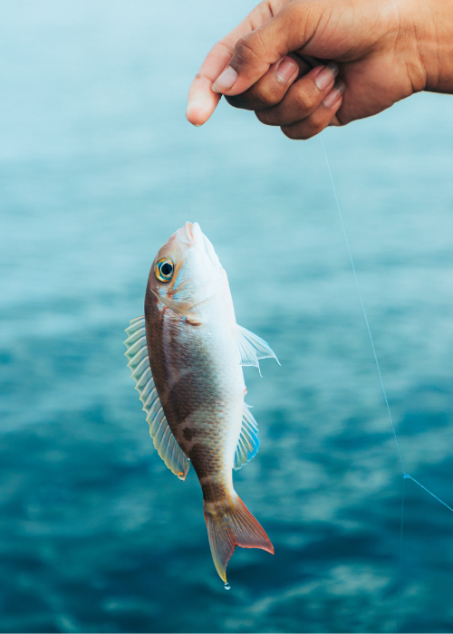
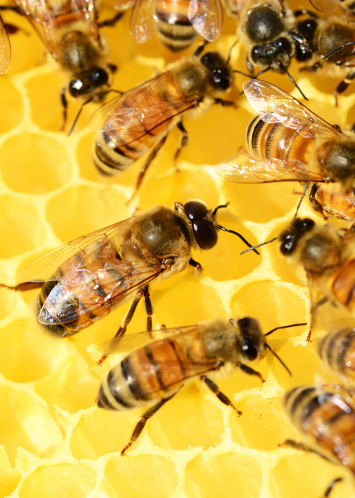
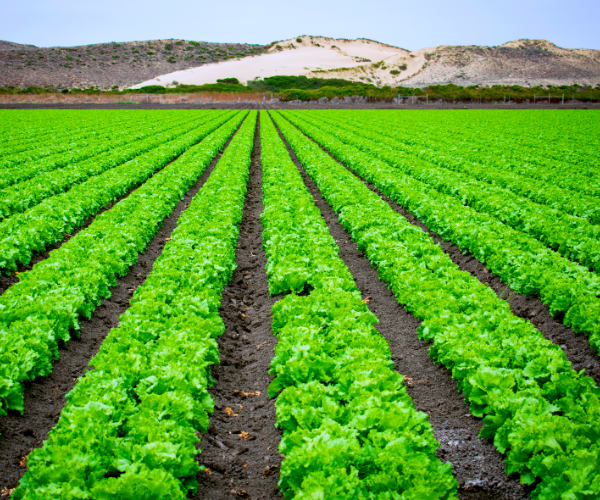
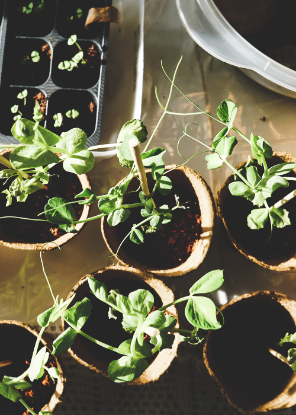

Services
The Ministry of Agriculture, Land and Fisheries supply a wide array of services for all citizen of Trinidad and Tobago.Any interested persons can contact the Agricultural County Offices in their area for more information.
Get Help Now!

Farmer / Fisherman Registration
Online Services
Certificates & Permits

Bee Removal
State Land
Research

Training & Advice

Purchase of Plants and Seedlings
New to our website?
Lean more about the the Ministry of Agriculture, Land and Fisheries and our Vision for Trinidad and Tobago.Learn More